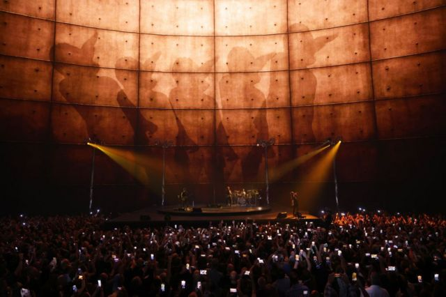
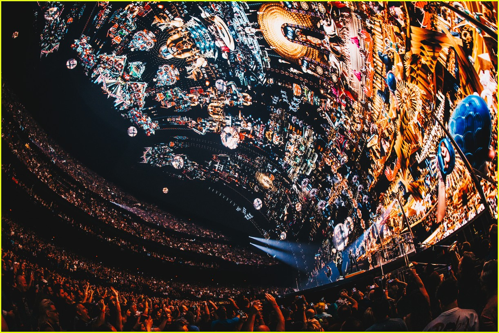
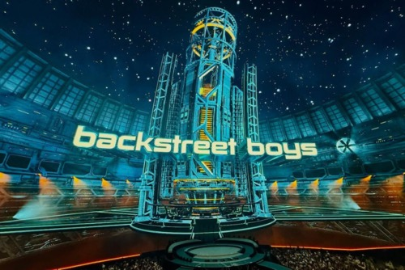
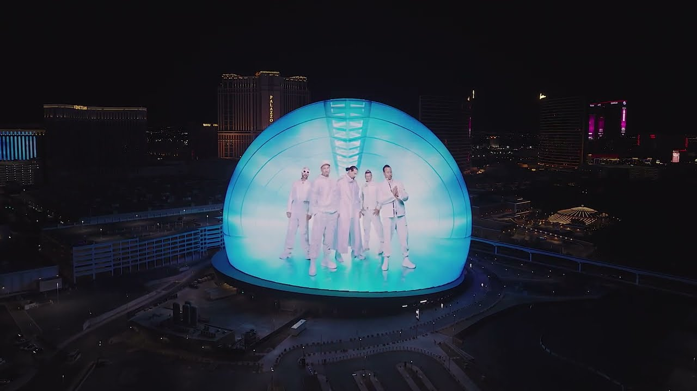

Cuando el concierto se convierte en experiencia total
La Sphere transforma los conciertos en entornos perceptuales completos. El escenario ya no es un punto focal — es el ambiente entero. Dos artistas, dos filosofías opuestas.

↑ Vista interior de la Sphere durante UV Achtung Baby Live — la pantalla LED de 15,000 m² rodea completamente al público.
U2 no dio un concierto — construyó una máquina perceptual. El legendario Zoo TV Tour de los 90s, reimaginado para el venue más avanzado del mundo.
Múltiples pantallas simultáneas proyectan noticieros, anuncios, símbolos políticos y ruido visual. Iluminación de alta intensidad con contrastes extremos crea inestabilidad atmosférica. Guitarras con delay, distorsión controlada y capas de ambiente envuelven al espectador.
Cámaras en vivo introducen reflexividad — los espectadores se ven como imágenes, entrando al circuito mediático que la obra critica. La audiencia no es espectadora: es parte del dispositivo.
El mensaje central: cómo la tecnología transforma la percepción, convierte la realidad en espectáculo y construye identidad a través de máscaras. Una crítica al exceso mediático ejecutada con las mismas herramientas que critica.
Achtung Baby aplica principios de percepción humana y procesamiento cognitivo. Múltiples pantallas, iluminación intensa y estímulos repetitivos generan saturación sensorial controlada.
La BBC señaló que el Zoo TV Tour imitaba deliberadamente el caos de los medios modernos. El ritmo repetitivo favorece estados de atención sostenida, permitiendo al cerebro procesar múltiples estímulos en paralelo.
La experiencia es "no pasiva ni contemplativa — inmersiva y casi fisiológica: el cuerpo responde a la vibración sónica, la visión se adapta al cambio constante, la mente intenta organizar información que la desborda perpetuamente."


Si U2 abrumó los sentidos, los Backstreet Boys los guiaron. Una filosofía radicalmente diferente de cómo usar el espacio de la Sphere.
Basado en pop altamente producido que enfatiza armonías vocales limpias y estructuras accesibles. La producción prioriza claridad y perfección técnica, característica del pop de los 90s. Coreografía sincronizada con narrativas visuales coherentes.
Colores brillantes pero organizados, ritmos pegadizos, estructuras claras. La Sphere amplifica estas cualidades — la pantalla 16K convierte las formaciones coreográficas en algo monumental, rodeando completamente al espectador.
Los Backstreet Boys conectan ciencia y arte a través de la psicología musical y la cognición emocional.
Sus canciones emplean estructuras predecibles, armonías vocales en capas y ritmos consistentes que activan mecanismos cerebrales relacionados con la memoria, la anticipación y el placer auditivo.
La BBC señala que su éxito se basa en fórmulas musicales que el cerebro procesa fácilmente, facilitando familiaridad y retención. El cerebro no lucha por procesar — disfruta reconociendo. La Sphere convierte esa familiaridad en algo gigante y envolvente.
La diferencia clave con U2: mientras U2 busca desbordar al cerebro, los BSB buscan satisfacerlo — dos estrategias cognitivas válidas y opuestas.

Dos filosofías, un mismo espacio
U2 aplica la saturación — principios de sobrecarga sensorial controlada que obligan al cerebro a fragmentar el foco. Los Backstreet Boys aplican la familiaridad — estructuras predecibles que activan placer, memoria y anticipación. Ambos demuestran que la música en la Sphere no es entretenimiento amplificado — es una nueva forma de experiencia humana.